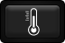

<<快速回到报警反生开始点
超清
3车
标清
高清
超清
定 位
当前位置：
当前进度：
对比分析
自动曝光

红外测温
放大镜
详细信息
播放详情
检测列表
确认报警
按时间定位
按位置定位
线 路：
行 别：
区 间：
桥 隧：
公 里 标：
—
支 柱：
开始时间：
隐藏
定位
位 置：
时 间：
设备编号：
弓 位 置：
红外温度：
拉 出 值：
导 高 值：
速 度：
报警列表
发生时间
缺陷类型
报警级别
弓位置
内所有检测数据
设备编号
时间
优先级
弓位置
操作
操作结果
开始:
结束:
优先级 ：
设 置
加载中...
红外图像
打开
辅助
加载中...
局部图像
打开
加载中...
全景图像
打开
加载中...
辅助图像
关闭
红外测温
单点测温
单点连续测温
区域测温
加载中...
播放原始数据
播放时间范围：
当天全部
报警发生前后1分钟
报警发生前后5秒钟